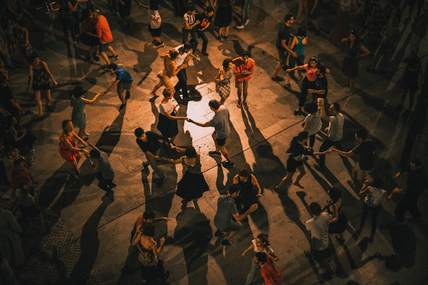
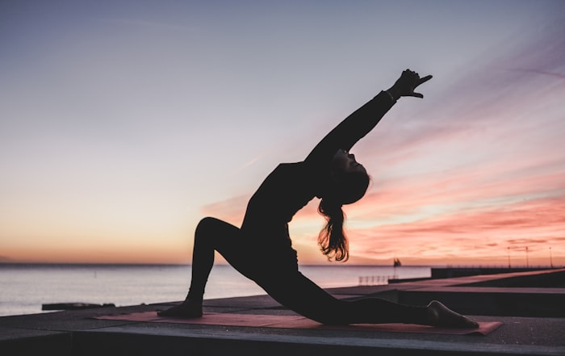
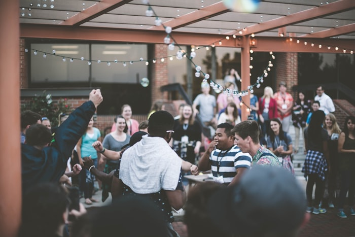

Saturday · 10:00 – 11:30
Voice & Harmony
A guided vocal session open to everyone. Learn breathing techniques, simple harmonies, and discover the power of singing together in a group. No singing experience required.
 After Tomorrow
After Tomorrow
Hands-on sessions open to all — no experience needed, just curiosity.
All workshops are free for ticket holders and run across both festival days. Capacity is limited, so arrive a few minutes early to secure your spot. No registration is required in advance.
Saturday · 10:00 – 11:30
A guided vocal session open to everyone. Learn breathing techniques, simple harmonies, and discover the power of singing together in a group. No singing experience required.

Saturday · 14:00 – 15:30
A free-form movement session on the meadow. Let go of inhibitions through rhythm and guided dance. Facilitated by movement artist Lena Böhm, this is about joy — not technique.

Sunday · 09:00 – 10:00
Start your Sunday gently with a guided mindfulness walk through the alpine meadows. Breathe, move slowly, and reconnect with the landscape and yourself before the day's music begins.

Saturday · 16:00 – 17:30
Try acoustic instruments from across Europe — guitar, frame drum, mountain zither, and more. Led by local musicians, this hands-on session is open to curious beginners and seasoned players alike.

Both days · 11:00 – 14:00
A dedicated creative space where children can draw, paint, and make nature-inspired art from materials found around the festival grounds. Free for all ticket holders under 14, parents welcome.

Sunday · 15:00 – 16:30
Share and listen to personal stories from different cultures, languages, and life journeys. This intimate circle is facilitated gently — you can listen without speaking, or share as much as you like.
All workshops are included with your festival ticket.
Get your ticket